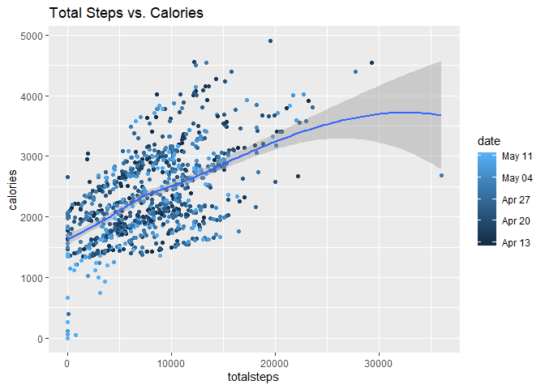
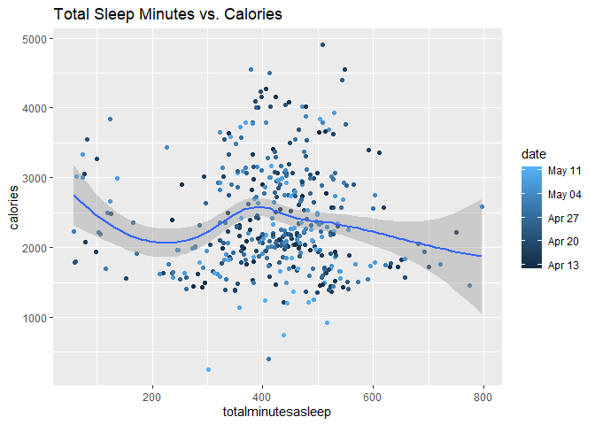
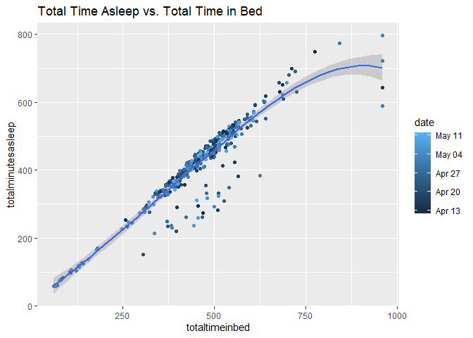
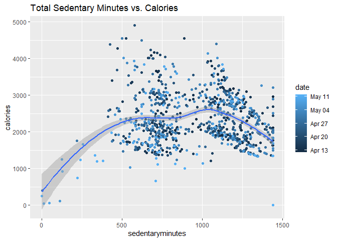

Bellabeat Case Study
Gnanadeep Settykara
2024-02-26
Ask
Business Task
Bellabeat, a high-tech company focusing on health-centric smart products, wants to leverage smart device usage data to gain insights into consumer behavior. The goal is to understand trends in smart device usage, explore their potential application to Bellabeat customers, and use these insights to inform the company’s marketing strategy.
Key Stakeholders
- Urška Sršen (Co-founder)
- Sando Mur (Co-founder)
- Bellabeat Marketing Department
Objectives
- Analyze trends in non-Bellabeat smart device usage.
- Understand how these trends may relate to Bellabeat’s target customers.
- Formulate high-level recommendations for Bellabeat’s marketing strategy based on the smart device usage analysis.
Prepare
Data Source: https://www.kaggle.com/datasets/arashnic/fitbit
Data follows ROCCC approach:
Reliable: The data seems reliable as it comes from FitBit users who voluntarily submitted their personal tracker data. FitBit is a well-known brand for fitness tracking, and users typically provide accurate information.
Original: The data source is mentioned as public data collected directly from FitBit users via a survey on Amazon Mechanical Turk. This suggests that the data is original and not a secondary source.
Current: The information doesn’t explicitly mention the timeframe of the data, so it’s unclear if the data is current. Knowing the date range or the period of data collection would help assess its currency.
Comprehensive: The data appears to cover minute-level output for physical activity, heart rate, and sleep monitoring. This suggests a comprehensive dataset, especially if it includes a diverse set of users.
Cited: The data license is mentioned as CC0: Public Domain.
# Loading packages
library(tidyverse)
library(lubridate)
library(dplyr)
library(tidyr)
library(ggplot2)Loading and Exploring the data
# Importing Datasets
activity_data <- read.csv("C:/Users/Deep/Desktop/SE/Case study Data Analytics/Dataset/fitbit/Fitabase Data 4.12.16-5.12.16/dailyActivity_merged.csv")
calories_data <- read.csv("C:/Users/Deep/Desktop/SE/Case study Data Analytics/Dataset/fitbit/Fitabase Data 4.12.16-5.12.16/dailyCalories_merged.csv")
intensities_data <- read.csv("C:/Users/Deep/Desktop/SE/Case study Data Analytics/Dataset/fitbit/Fitabase Data 4.12.16-5.12.16/dailyIntensities_merged.csv")
steps_data <- read.csv("C:/Users/Deep/Desktop/SE/Case study Data Analytics/Dataset/fitbit/Fitabase Data 4.12.16-5.12.16/dailySteps_merged.csv")
sleep_data <- read.csv("C:/Users/Deep/Desktop/SE/Case study Data Analytics/Dataset/fitbit/Fitabase Data 4.12.16-5.12.16/sleepDay_merged.csv")
weight_data <- read.csv("C:/Users/Deep/Desktop/SE/Case study Data Analytics/Dataset/fitbit/Fitabase Data 4.12.16-5.12.16/weightLogInfo_merged.csv")
# Explore the data
head(activity_data)## Id ActivityDate TotalSteps TotalDistance TrackerDistance
## 1 1503960366 4/12/2016 13162 8.50 8.50
## 2 1503960366 4/13/2016 10735 6.97 6.97
## 3 1503960366 4/14/2016 10460 6.74 6.74
## 4 1503960366 4/15/2016 9762 6.28 6.28
## 5 1503960366 4/16/2016 12669 8.16 8.16
## 6 1503960366 4/17/2016 9705 6.48 6.48
## LoggedActivitiesDistance VeryActiveDistance ModeratelyActiveDistance
## 1 0 1.88 0.55
## 2 0 1.57 0.69
## 3 0 2.44 0.40
## 4 0 2.14 1.26
## 5 0 2.71 0.41
## 6 0 3.19 0.78
## LightActiveDistance SedentaryActiveDistance VeryActiveMinutes
## 1 6.06 0 25
## 2 4.71 0 21
## 3 3.91 0 30
## 4 2.83 0 29
## 5 5.04 0 36
## 6 2.51 0 38
## FairlyActiveMinutes LightlyActiveMinutes SedentaryMinutes Calories
## 1 13 328 728 1985
## 2 19 217 776 1797
## 3 11 181 1218 1776
## 4 34 209 726 1745
## 5 10 221 773 1863
## 6 20 164 539 1728head(intensities_data)## Id ActivityDay SedentaryMinutes LightlyActiveMinutes
## 1 1503960366 4/12/2016 728 328
## 2 1503960366 4/13/2016 776 217
## 3 1503960366 4/14/2016 1218 181
## 4 1503960366 4/15/2016 726 209
## 5 1503960366 4/16/2016 773 221
## 6 1503960366 4/17/2016 539 164
## FairlyActiveMinutes VeryActiveMinutes SedentaryActiveDistance
## 1 13 25 0
## 2 19 21 0
## 3 11 30 0
## 4 34 29 0
## 5 10 36 0
## 6 20 38 0
## LightActiveDistance ModeratelyActiveDistance VeryActiveDistance
## 1 6.06 0.55 1.88
## 2 4.71 0.69 1.57
## 3 3.91 0.40 2.44
## 4 2.83 1.26 2.14
## 5 5.04 0.41 2.71
## 6 2.51 0.78 3.19head(calories_data)## Id ActivityDay Calories
## 1 1503960366 4/12/2016 1985
## 2 1503960366 4/13/2016 1797
## 3 1503960366 4/14/2016 1776
## 4 1503960366 4/15/2016 1745
## 5 1503960366 4/16/2016 1863
## 6 1503960366 4/17/2016 1728head(steps_data)## Id ActivityDay StepTotal
## 1 1503960366 4/12/2016 13162
## 2 1503960366 4/13/2016 10735
## 3 1503960366 4/14/2016 10460
## 4 1503960366 4/15/2016 9762
## 5 1503960366 4/16/2016 12669
## 6 1503960366 4/17/2016 9705head(sleep_data)## Id SleepDay TotalSleepRecords TotalMinutesAsleep
## 1 1503960366 4/12/2016 12:00:00 AM 1 327
## 2 1503960366 4/13/2016 12:00:00 AM 2 384
## 3 1503960366 4/15/2016 12:00:00 AM 1 412
## 4 1503960366 4/16/2016 12:00:00 AM 2 340
## 5 1503960366 4/17/2016 12:00:00 AM 1 700
## 6 1503960366 4/19/2016 12:00:00 AM 1 304
## TotalTimeInBed
## 1 346
## 2 407
## 3 442
## 4 367
## 5 712
## 6 320head(weight_data)## Id Date WeightKg WeightPounds Fat BMI
## 1 1503960366 5/2/2016 11:59:59 PM 52.6 115.9631 22 22.65
## 2 1503960366 5/3/2016 11:59:59 PM 52.6 115.9631 NA 22.65
## 3 1927972279 4/13/2016 1:08:52 AM 133.5 294.3171 NA 47.54
## 4 2873212765 4/21/2016 11:59:59 PM 56.7 125.0021 NA 21.45
## 5 2873212765 5/12/2016 11:59:59 PM 57.3 126.3249 NA 21.69
## 6 4319703577 4/17/2016 11:59:59 PM 72.4 159.6147 25 27.45
## IsManualReport LogId
## 1 True 1.462234e+12
## 2 True 1.462320e+12
## 3 False 1.460510e+12
## 4 True 1.461283e+12
## 5 True 1.463098e+12
## 6 True 1.460938e+12We can observe that there are missing values in the weight data, particularly in the “fat” column.
Process
Data Cleaning
# Converting column names and fixing date formats
# activity
activity_cleaned <- activity_data %>%
rename_with(tolower) %>%
mutate(date = as.Date(activitydate, "%m/%d/%y")) # fixing date formats
# intensities
intensities_cleaned <- intensities_data %>%
rename_with(tolower) %>%
mutate(date = as.Date(activityday, "%m/%d/%y")) # fixing date formats
# calories
calories_cleaned <- calories_data %>%
rename_with(tolower) %>%
rename(activitydate = activityday) %>%
mutate(date = as.Date(activitydate, "%m/%d/%y")) # fixing date formats
# steps
steps_cleaned <- steps_data %>%
rename_with(tolower) %>%
rename(activitydate = activityday) %>%
mutate(date = as.Date(activitydate, "%m/%d/%y")) # fixing date formats
# sleep
sleep_cleaned <- sleep_data %>%
rename_with(tolower) %>%
rename(activitydate = sleepday) %>%
mutate(date = as.Date(activitydate, "%m/%d/%y")) # fixing date formats
# weight
weight_cleaned <- weight_data %>%
rename_with(tolower) %>%
rename(activitydate = date) %>%
mutate(date = as.Date(activitydate, "%m/%d/%y")) # fixing date formatsExploring the data
# Exploring the data
n_distinct(activity_data$Id)## [1] 33n_distinct(intensities_data$Id)## [1] 33n_distinct(calories_data$Id)## [1] 33n_distinct(steps_data$Id)## [1] 33n_distinct(sleep_data$Id)## [1] 24n_distinct(weight_data$Id)## [1] 8From the above information, we can identify that there are only 8 data samples from weight data, which cannot be sufficient to deduce some insights using this data.
Analyze
Let’s identify some statistical insights about the data
summary(activity_cleaned)## id activitydate totalsteps totaldistance
## Min. :1.504e+09 Length:940 Min. : 0 Min. : 0.000
## 1st Qu.:2.320e+09 Class :character 1st Qu.: 3790 1st Qu.: 2.620
## Median :4.445e+09 Mode :character Median : 7406 Median : 5.245
## Mean :4.855e+09 Mean : 7638 Mean : 5.490
## 3rd Qu.:6.962e+09 3rd Qu.:10727 3rd Qu.: 7.713
## Max. :8.878e+09 Max. :36019 Max. :28.030
## trackerdistance loggedactivitiesdistance veryactivedistance
## Min. : 0.000 Min. :0.0000 Min. : 0.000
## 1st Qu.: 2.620 1st Qu.:0.0000 1st Qu.: 0.000
## Median : 5.245 Median :0.0000 Median : 0.210
## Mean : 5.475 Mean :0.1082 Mean : 1.503
## 3rd Qu.: 7.710 3rd Qu.:0.0000 3rd Qu.: 2.053
## Max. :28.030 Max. :4.9421 Max. :21.920
## moderatelyactivedistance lightactivedistance sedentaryactivedistance
## Min. :0.0000 Min. : 0.000 Min. :0.000000
## 1st Qu.:0.0000 1st Qu.: 1.945 1st Qu.:0.000000
## Median :0.2400 Median : 3.365 Median :0.000000
## Mean :0.5675 Mean : 3.341 Mean :0.001606
## 3rd Qu.:0.8000 3rd Qu.: 4.782 3rd Qu.:0.000000
## Max. :6.4800 Max. :10.710 Max. :0.110000
## veryactiveminutes fairlyactiveminutes lightlyactiveminutes sedentaryminutes
## Min. : 0.00 Min. : 0.00 Min. : 0.0 Min. : 0.0
## 1st Qu.: 0.00 1st Qu.: 0.00 1st Qu.:127.0 1st Qu.: 729.8
## Median : 4.00 Median : 6.00 Median :199.0 Median :1057.5
## Mean : 21.16 Mean : 13.56 Mean :192.8 Mean : 991.2
## 3rd Qu.: 32.00 3rd Qu.: 19.00 3rd Qu.:264.0 3rd Qu.:1229.5
## Max. :210.00 Max. :143.00 Max. :518.0 Max. :1440.0
## calories date
## Min. : 0 Min. :2020-04-12
## 1st Qu.:1828 1st Qu.:2020-04-19
## Median :2134 Median :2020-04-26
## Mean :2304 Mean :2020-04-26
## 3rd Qu.:2793 3rd Qu.:2020-05-04
## Max. :4900 Max. :2020-05-12summary(intensities_cleaned)## id activityday sedentaryminutes lightlyactiveminutes
## Min. :1.504e+09 Length:940 Min. : 0.0 Min. : 0.0
## 1st Qu.:2.320e+09 Class :character 1st Qu.: 729.8 1st Qu.:127.0
## Median :4.445e+09 Mode :character Median :1057.5 Median :199.0
## Mean :4.855e+09 Mean : 991.2 Mean :192.8
## 3rd Qu.:6.962e+09 3rd Qu.:1229.5 3rd Qu.:264.0
## Max. :8.878e+09 Max. :1440.0 Max. :518.0
## fairlyactiveminutes veryactiveminutes sedentaryactivedistance
## Min. : 0.00 Min. : 0.00 Min. :0.000000
## 1st Qu.: 0.00 1st Qu.: 0.00 1st Qu.:0.000000
## Median : 6.00 Median : 4.00 Median :0.000000
## Mean : 13.56 Mean : 21.16 Mean :0.001606
## 3rd Qu.: 19.00 3rd Qu.: 32.00 3rd Qu.:0.000000
## Max. :143.00 Max. :210.00 Max. :0.110000
## lightactivedistance moderatelyactivedistance veryactivedistance
## Min. : 0.000 Min. :0.0000 Min. : 0.000
## 1st Qu.: 1.945 1st Qu.:0.0000 1st Qu.: 0.000
## Median : 3.365 Median :0.2400 Median : 0.210
## Mean : 3.341 Mean :0.5675 Mean : 1.503
## 3rd Qu.: 4.782 3rd Qu.:0.8000 3rd Qu.: 2.053
## Max. :10.710 Max. :6.4800 Max. :21.920
## date
## Min. :2020-04-12
## 1st Qu.:2020-04-19
## Median :2020-04-26
## Mean :2020-04-26
## 3rd Qu.:2020-05-04
## Max. :2020-05-12summary(calories_cleaned)## id activitydate calories date
## Min. :1.504e+09 Length:940 Min. : 0 Min. :2020-04-12
## 1st Qu.:2.320e+09 Class :character 1st Qu.:1828 1st Qu.:2020-04-19
## Median :4.445e+09 Mode :character Median :2134 Median :2020-04-26
## Mean :4.855e+09 Mean :2304 Mean :2020-04-26
## 3rd Qu.:6.962e+09 3rd Qu.:2793 3rd Qu.:2020-05-04
## Max. :8.878e+09 Max. :4900 Max. :2020-05-12summary(steps_cleaned)## id activitydate steptotal date
## Min. :1.504e+09 Length:940 Min. : 0 Min. :2020-04-12
## 1st Qu.:2.320e+09 Class :character 1st Qu.: 3790 1st Qu.:2020-04-19
## Median :4.445e+09 Mode :character Median : 7406 Median :2020-04-26
## Mean :4.855e+09 Mean : 7638 Mean :2020-04-26
## 3rd Qu.:6.962e+09 3rd Qu.:10727 3rd Qu.:2020-05-04
## Max. :8.878e+09 Max. :36019 Max. :2020-05-12summary(sleep_cleaned)## id activitydate totalsleeprecords totalminutesasleep
## Min. :1.504e+09 Length:413 Min. :1.000 Min. : 58.0
## 1st Qu.:3.977e+09 Class :character 1st Qu.:1.000 1st Qu.:361.0
## Median :4.703e+09 Mode :character Median :1.000 Median :433.0
## Mean :5.001e+09 Mean :1.119 Mean :419.5
## 3rd Qu.:6.962e+09 3rd Qu.:1.000 3rd Qu.:490.0
## Max. :8.792e+09 Max. :3.000 Max. :796.0
## totaltimeinbed date
## Min. : 61.0 Min. :2020-04-12
## 1st Qu.:403.0 1st Qu.:2020-04-19
## Median :463.0 Median :2020-04-27
## Mean :458.6 Mean :2020-04-26
## 3rd Qu.:526.0 3rd Qu.:2020-05-04
## Max. :961.0 Max. :2020-05-12summary(weight_cleaned)## id activitydate weightkg weightpounds
## Min. :1.504e+09 Length:67 Min. : 52.60 Min. :116.0
## 1st Qu.:6.962e+09 Class :character 1st Qu.: 61.40 1st Qu.:135.4
## Median :6.962e+09 Mode :character Median : 62.50 Median :137.8
## Mean :7.009e+09 Mean : 72.04 Mean :158.8
## 3rd Qu.:8.878e+09 3rd Qu.: 85.05 3rd Qu.:187.5
## Max. :8.878e+09 Max. :133.50 Max. :294.3
##
## fat bmi ismanualreport logid
## Min. :22.00 Min. :21.45 Length:67 Min. :1.460e+12
## 1st Qu.:22.75 1st Qu.:23.96 Class :character 1st Qu.:1.461e+12
## Median :23.50 Median :24.39 Mode :character Median :1.462e+12
## Mean :23.50 Mean :25.19 Mean :1.462e+12
## 3rd Qu.:24.25 3rd Qu.:25.56 3rd Qu.:1.462e+12
## Max. :25.00 Max. :47.54 Max. :1.463e+12
## NA's :65
## date
## Min. :2020-04-12
## 1st Qu.:2020-04-19
## Median :2020-04-27
## Mean :2020-04-26
## 3rd Qu.:2020-05-04
## Max. :2020-05-12
## Identified Trends
Activity Summary: Average steps: 7638 (below CDC’s 10000 recommendation) Average sedentary minutes: 991.2 (16.52 hours), suggesting a need for reduction.
Intensities Summary: Average lightly active minutes: 199, indicating predominant light activity.
Calories Summary: Average BMI: 25.19 (overweight; caution without age and gender context)
Steps Summary: Average daily steps: 7638.
Sleep Summary: Average sleep duration: 419.5 minutes. Average total time in bed: 458.6 minutes.
Weight Summary: Average BMI: 25.19 (overweight; caution without age and gender context).
Share
Let’s assume few hypothesis and create visualizations to validate them.
# The total steps taken are positively correlated with calories burned
ggplot(data = activity_cleaned, mapping = aes(x = totalsteps, y = calories, color = date)) +
geom_point() + geom_smooth() +
labs(title = "Total Steps vs. Calories")## `geom_smooth()` using method = 'loess' and formula = 'y ~ x'
There is an actual positive correlation between the total steps and calories burned.
# The total sleep duration has a negative correlation with calories burned
merged1 <- merge(sleep_cleaned, calories_cleaned, by = c('id', 'date'))
ggplot(data = merged1, mapping = aes(x = totalminutesasleep, y = calories, color = date)) +
geom_point() + geom_smooth() +
labs(title = "Total Sleep Minutes vs. Calories")## `geom_smooth()` using method = 'loess' and formula = 'y ~ x'
There is neither positive nor negative correlation between the total sleep minutes and calories burned. That means, Sleeping more has no direct effect on buring more calories.
# Sedentary minutes have a positive correlation with BMI
merged3 <- merge(weight_cleaned, activity_cleaned, by = c('id', 'date'))
ggplot(data = merged3, mapping = aes(y = bmi, x = sedentaryminutes, color = date)) +
geom_point() + geom_smooth() +
labs(title = "Sedentary Minutes vs. BMI")## `geom_smooth()` using method = 'loess' and formula = 'y ~ x'
There is a positive correlation between the Sedentary Minutes and BMI. It means that people with higher BMI (usually overweight people based on their age/gender) usually have high sedentary minutes. Therefore, it is highly important to reduce the sedentary minutes and maintain good activity.
# Total time asleep has a positive correlation with total time in bed
ggplot(data = sleep_cleaned, mapping = aes(x = totaltimeinbed, y = totalminutesasleep, color = date)) +
geom_point() + geom_smooth() +
labs(title = "Total Time Asleep vs. Total Time in Bed")## `geom_smooth()` using method = 'loess' and formula = 'y ~ x'
This suggests that there is a positive correlation between time asleep and total time in bed. That clearly means, the more time people spend in their bed, the more time they are asleep.
# The total sedentary minutes have a negative correlation with total calories burned
merged2 <- merge(intensities_cleaned, calories_cleaned, by = c('id', 'date'))
ggplot(data = merged2, mapping = aes(x = sedentaryminutes, y = calories, color = date)) +
geom_point() + geom_smooth() +
labs(title = "Total Sedentary Minutes vs. Calories")## `geom_smooth()` using method = 'loess' and formula = 'y ~ x'
This suggests a negative correlation between the total calories burned vs total sedentary minutes spent. This means that if a person spent more time with no activity, then they burned less calories.
Phase
Final Conclusion:
- Propose an overhaul of the app’s features based on user preferences and engagement levels.
- Emphasize the need for addressing insomnia, sedentary behavior, and obesity in users.
Application of Insights:
- Implement suggested changes in the Bellabeat app, including feature improvements and additions.
- Introduce targeted marketing strategies focusing on health improvement and community building.
Next Steps:
- Initiate a phased rollout of app updates with enhanced features.
- Monitor user feedback and engagement post-update for continuous improvement.
- Evaluate the effectiveness of marketing campaigns through user engagement metrics.
Additional Data Consideration:
- Collect user feedback on new features and iterate accordingly.
- Explore user demographics and preferences to tailor app features more effectively.